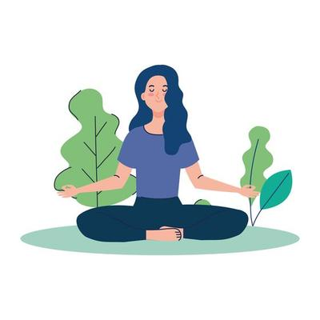
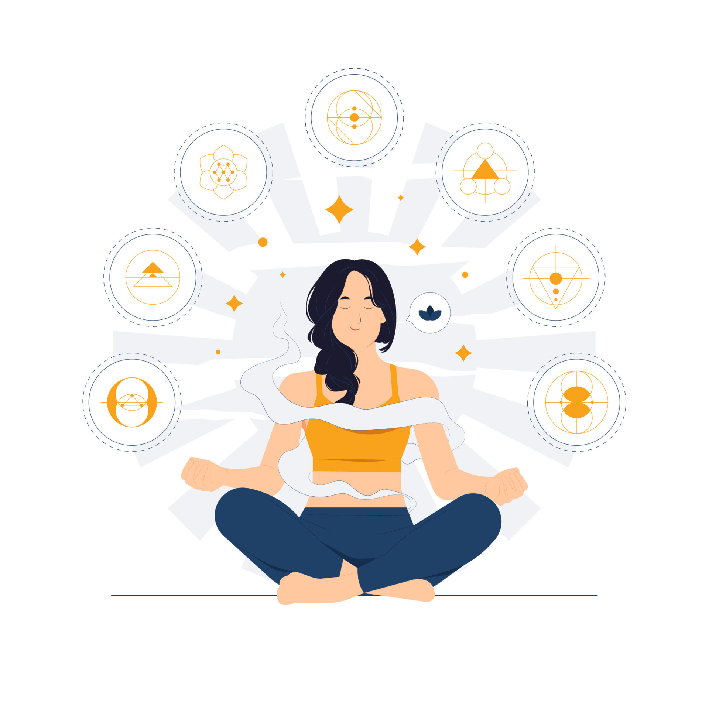

Cuidados com a Saúde Mental
Técnicas de meditação e dicas para o gerenciamento de estresse.
Meditação da Respiração

Sente-se em um lugar tranquilo e concentre-se na sua respiração. Inspire profundamente pelo nariz, segure por um momento e expire lentamente pela boca. Faça isso por 5-10 minutos.
Meditação Guiada
Use aplicativos ou vídeos de meditação guiada que oferecem orientações sobre visualizações ou relaxamento. Isso pode ajudar a manter o foco e reduzir a ansiedade.
Meditação Mindfulness
Pratique a atenção plena, observando seus pensamentos e sensações sem julgá-los. Concentre-se no momento presente e reconheça suas emoções, permitindo-se soltá-las.